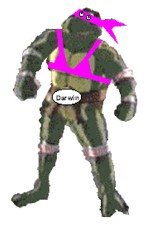
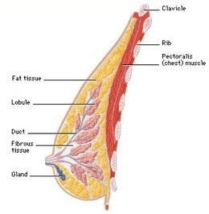
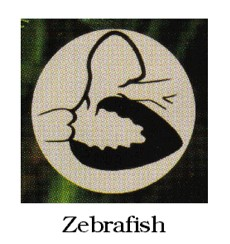
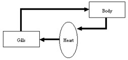
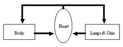
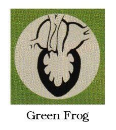
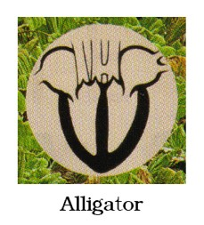
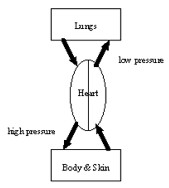
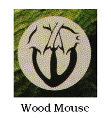

 |
Evolutionists don't really believe that turtles, or any other reptiles, turned into mammals in the "stone age." That's udderly ridiculous. They believe reptiles turned into mammals during the "Mesozoic era", which is so much more believable.  But the turtle parody and the caricature possibilities were so compelling that we couldn't resist twisting the evolutionists' position just a little bit to make our point. What kind of a boob would believe that a reptile could grow a breast? But the turtle parody and the caricature possibilities were so compelling that we couldn't resist twisting the evolutionists' position just a little bit to make our point. What kind of a boob would believe that a reptile could grow a breast?
Well, enough kidding around. Let's seriously examine the evolutionary myth of how a reptile grew breasts and became a mammal.
|
Origin of Mammals
Here's what a typical, modern encyclopedia tells us.
|
Mammal, common name applied to any warm-blooded animal belonging to the class that includes humans and all other animals that nourish their young with milk, that are covered with varying amounts of hair, and that possess a muscular diaphragm. 1
Also known as a mammary gland, particularly in nonhuman mammals, the breast is unique to mammals and is not found in any other type of animal. 2
|
Mammals are mammals because they have mammary glands. This is part of an arbitrary system that biologists have invented to classify animals. Mammals used to be called "quadrupeds" because they have four feet. Then somebody counted the feet on bats and whales, and decided that wasn't a very good name for them. Mammals also have hair. (At Sea World, they must shave the dolphins every morning so that you can feel their bare skin when you pet them. )
Cows, whales, bats, kangaroos, and the duck-billed platypus are all classified together just because they all have mammary glands. It is a distinction that is drawn purely for convenience of study. Biologists want to understand how life works. In particular, some want to understand how animals nurture their young. So, it makes perfect sense to put all animals with mammary glands in one category. There is nothing wrong with that. That is good science.
The unwarranted assumption that some scientists make is that all mammals have mammary glands because they evolved from a common ancestor that had mammary glands. That's bad science.
|
Mammals probably appeared on the earth during the early Mesozoic era [250 - 65 million years ago]. Most zoologists believe that mammals evolved from a group of extinct mammal-like reptiles, Theriodontia, which existed during the Triassic period [250 - 202 million years ago]. The earliest animal fossils that have definitely been identified as mammals were found in rocks from the Jurassic period [202 - 141 million years ago].
During the Jurassic period, five distinct orders of mammals existed. One order was made up of small, rodent-like mammals, having gnawing front teeth and grinding teeth with several cusps, that became extinct in the Eocene epoch [55 - 34 million years ago]. A second order consisted of small, carnivorous mammals, having molar teeth equipped with three simple, cone-like cusps, that became extinct before the end of the Eocene epoch. A third group of small insect-eating mammals are the probable ancestors of present-day mammals.
Of the mammalian subclasses that still exist, the monotremes are unrepresented by fossil remains; the earliest marsupial and placental fossils were found in rocks of the Cretaceous period [141 - 65 million years ago]. The marsupials were apparently unsuccessful in competition with the placentals (mammals with placentas, the organ surrounding a fetus within the uterus), and by the beginning of the Eocene epoch were restricted to the opossum family in North America, several families (now mostly extinct) in South America, and several families in Australia. The earliest fossil remains of placentals discovered thus far have been found in western North America and western Europe; the placentals originated in the late Cretaceous period [we suppose they mean, "about 80 million years ago"], and fossil records indicate that they spread rapidly throughout the Cenozoic era [65 million years ago to present] to form the dominant mammalian group all over the world except in Australia. The insectivores, considered the oldest order of placental mammals, strongly resemble early fossil placentals.
3
|
This is all stated as a matter of fact. Where is the proof? How do they know?
They said,
|
One order was made up of small, rodent-like mammals, having gnawing front teeth and grinding teeth with several cusps, that became extinct in the Eocene epoch. A second order consisted of small, carnivorous mammals, having molar teeth equipped with three simple, cone-like cusps, that became extinct before the end of the Eocene epoch.
|
Let's think about that. Since they supposedly have been extinct for at least 34 million years, nobody has ever seen one nursing its young. As far as we know, nobody has ever found a fossilized breast (or any udder thing ). How do they know these small, rodent-like, carnivorous animals were mammals? Encarta doesn't say, but we know from other sources that evolutionists think they can construct entire animals from a bone fragment or two. (See this month's Evolution in the News column for a recent example.)
One of the reasons why they think these fossil remains must have come from mammals is that they appear in the fossil record at the time when mammals evolved. How do they know mammals evolved then? Because that's when these small carnivorous mammals evolved. (Don't let the circular logic get you too dizzy here.)
Origin of Monotremes
Remember that Encarta also said, "Of the mammalian subclasses that still exist, the monotremes are unrepresented by fossil remains."
Monotremes are egg-laying mammals like the duck-billed platypus. According to Encarta, nobody has ever found a fossilized platypus. They haven't found a single Jurassic platypus fossil. Still, they state quite factually that monotremes lived during the Jurassic period. One could just as logically assert that the monotremes lived in the Cambrian period because nobody has ever found a fossilized Cambrian monotreme, either.
Placental Mammal Fossils
Placentas don't fossilize. But cows today have placentas, so if you find a fossilized cow, it is logical to believe that it had a placenta when it was alive. At least, it is logical if you aren't an evolutionist. Evolutionists shouldn't necessarily believe extinct cows had placentas.
Evolutionists believe that placental mammals evolved from egg-laying reptiles. So, the cow evolved both its body shape, and its reproductive system, through some presumably long series of steps, from a reptile. Which came first? If one believes in evolution, why not believe that the early cows laid eggs, and evolved into placental mammals later?
Reproductive Differences
This brings us to our main point, which is the radical difference between reptilian and mammalian reproductive systems. Reptiles lay eggs. Here is the diagram of a reptile egg from the Encarta encyclopedia.
Here is the Encarta diagram of how the embryo develops in a placental mammal (in particular, a human).
How did the reproductive system get from point A to point B? Any scenario we suggest would be laughable. Did an egg get stuck in the womb of a lizard, and somehow put down roots in the uterus to get its nourishment? We've never heard an evolutionist attempt to explain the process. We suppose their response would be, "Just because we don't know exactly how it happened, doesn't mean it didn't happen." They accept illogical things like that on faith.
It isn't just the placenta that is problematic. Where did the breasts come from?
|
During pregnancy there is a remarkable growth of ducts and lobules in the breast along with a thickening of the nipples. After a baby is born, the hormone prolactin stimulates milk production in the breast. Initially, the breast produces a thick yellow liquid called colostrum, which is particularly rich in the disease-fighting substances called antibodies. Within three to five days, the breast produces milk as the suckling infant stimulates the release of another hormone called oxytocin. This hormone causes contractions in the network of cells that surround the ducts and lobules, so that milk readily flows from the breast and into the mouth of the hungry infant. 4
|
 |
In other words, there is a complex series of hormonal changes that happen during pregnancy and birth in mammals that isn't present in reptiles. How long did it take for these hormones to develop?
Men have breasts, but men don't produce the hormones that make them useful. What if reptiles had evolved male breasts? The babies would all starve. Why didn't evolution select men who could nurse their babies, thus increasing the survival of their offspring?
The Monotreme Miracle
Of all the mammals, the monotreme (egg-laying mammal) seems to be the closest to reptiles.
|
Monotreme, common name applied to a group of egg-laying mammals, including the platypus, or duckbill, and the echidnas, or spiny anteaters. Monotremes are native to Australia, Tasmania, and New Guinea. They possess true teeth only during the early stages of embryonic development. After monotreme eggs are hatched, the young are helpless, and, in the case of the echidna, are carried in shallow abdominal pouches. Young monotremes do not have mouth parts suitable for suckling; the liquid produced by the nippleless mammary organ is licked from the belly hair of the mother.
5
|
For this to work, the pouch with the mammary gland would have to evolve before the young are born helpless. The mother would have to be smart enough to figure out that she has a pouch full of milk, and that it would be a good idea for her to pick up her helpless baby and put it in the pouch. All the required hormonal changes would have to happen by chance and be preserved by natural selection before they were of any use. It doesn't make sense.
Marvelous Marsupials
|
Female marsupials have two vaginas, which share a common opening but do not fuse. The placenta is not well developed, as it is in all other mammals except monotremes. The birth canal forms from an opening that develops in the connective tissue between the two vaginas. The young are born in an incomplete state of development some two to five weeks after conception. Immediately after birth they enter the mother's abdominal pouch, in species that have pouches, or else they simply anchor themselves to a teat, which expands to hold the young in place. They remain attached to a teat, inside a pouch or not, until old enough to forage for their own food.
6
|
How could something like this happen by chance? How did a reptile with one vagina, that reproduces by expelling hard-shelled eggs, become a marsupial? Are we being too skeptical? Or are the evolutionists too gullible?
Mammal-like Reptiles
The Theriodontia, "mammal-like reptiles," get their nickname from the fact that they have bones in their jaws that superficially resemble the bones in mammal ears. Evolutionists believe that during the evolutionary process these bones migrated from the jaw to the ear and attached themselves to the eardrum to improve their sense of hearing. Of course, these bones could not possibly have known that they would be more useful in the ear than in the jaw, so they must have been moved by random chance. As they were moving from the jaw to the ear, they imparted some unspecified survival benefit which continued the process on its way via natural selection. At least, that's what the brightest evolutionary minds tell us.
It is these bones in the jaw that have convinced evolutionists that Theriodontia link reptiles and mammals.
Think About It
Reptiles conceive eggs with hard shells, which they deposit in a nest on the ground. The embryos in those eggs continue to develop in the eggs, outside the mother's body, until they are mature enough to break out of the shell. At that point, they start eating bugs or leaves.
For the reptilian reproductive system to develop into a mammalian reproductive system, several things have to happen. The reptile mother has to resist the instinct to expel the egg into the nest. The egg shell chemistry has to change so that it develops into a soft amniotic sac rather than a hard shell. The mother reptile has to grow mammary glands and nipples. The mother and baby both have to know instinctively what to do with those nipples as soon as the baby is born. This all has to happen by chance at the same time.
Suppose a mutation does nothing more than turn the hard shell into a soft amniotic sac. All the eggs laid this way will burst like a water balloon as soon as they are laid. The genetic mutation won't be passed on.
We sometimes hear stories about reptiles (snakes) going into barns to eat eggs; but have you ever heard a story about a farmer who was annoyed because snakes kept sneaking into his barn to milk his cows? As far as we know, snakes have no natural inclination to drink milk. So why would any reptilian baby go to its mother for milk?
I had a pet lizard as a boy. It could chew, lick, and swallow. But I never saw my lizard suck anything. Could a baby lizard even suck a nipple if its mother had one?
What reptilian feature developed into a breast or udder? Seriously. Think about it. A female mammal eats food. The food is digested, and the nutrients go into the bloodstream. The mammary glands assemble these nutrients into milk. But they don't do it all the time. They only do it in response to hormone changes that occur after a baby is born. Doesn't it take an awful lot of faith to believe that this biological system could develop by chance? But that is what public school children are told they must believe, by faith, without any experimental proof or evidence of any kind.
... and Birds, too!
Consider this passage from a college biology textbook.
|
Two groups of small reptiles independently evolved insulation that minimizes heat loss: One group evolved feathers, while another group evolved hair.
Reptiles Gave Rise to Both Birds and Mammals
In the ancestral birds, insulating feathers retained body heat. Consequently, these animals could be active in cooler habitats and during the night, when their scaly relatives became sluggish. Later some ancestral birds developed longer, stronger feathers on their forelimbs, perhaps allowing them to glide from trees or to assist in jumping after insect prey. From this point, the evolution of flight became possible.
The hair of ancestral mammals also provided insulation. Unlike the birds, which retained the reptilian habit of laying eggs, mammals evolved live birth and the ability to feed their young with the secretions of the mammary (milk producing) glands. Because these structures do not fossilize, we may never know when the uterus, mammary glands, and hair first appeared, or what their intermediate forms looked like.
7
|
There is no real evidence for how reptiles evolved into mammals and birds. We "may never know when the uterus, mammary glands, and hair first appeared, or what their intermediate forms looked like." Of course we won't know what the intermediate forms looked like because there weren't any. The whole story is based on the idea that reptiles were uncomfortable being so cold, so they evolved hair or feathers to keep warm. And with the hair and feathers naturally came breasts and wings. Talk about pseudo-science!
The supposed evolution of dinosaurs into birds has received a lot of media attention in the last few years. But the change from a lizard to a bird is more than just the growth of some feathers to keep it warm.
There was a wonderful article published more than 20 years ago that described in great detail the "seven magic changes" that converted a dinosaur into a bird. 8 We wish we could reprint the entire article, but we will have to simply summarize some of the main points.
Scales are flat folds of skin. They would have to magically change into elongated feathers with a central quill, side branches (barbs) and hooks (barbules). Some of these feathers would have to be optimized for flight, while other feathers (down) would be optimized to conserve heat.
Small weak front limbs (which the dinosaur could not even walk on) would have to turn into big, strong wings that would support the entire weight of the bird. These wings would have to be shaped for flight, with a contour designed for lift and the ability to let air through on the up stroke but not on the down stroke. The body would have to be streamlined for flight.
The brain would have to develop the ability to control the wings. It would need greater levels of balance and migratory navigational skills. The brains of those birds with eyes on the sides of their heads would have to develop signal processing equivalent to a synthetic aperture radar to get depth perception.
The cardiovascular system would have to radically re-design itself by chance. It would need to change the reptilian bellows-type lung into the avian flow-through lung. It would have to synchronize its breathing with the flapping of its wings. It would have to change the structure of its bones so that air would flow through them, partly to make the bones lighter, and partly to support its much higher metabolism. It would also need a different kind of heart.
That brings us to the interesting topic of the diversity of animal hearts. Last April there was an excellent article in the Evolution section of Natural History magazine. It was written by Warren Burggren, a biologist, who is the dean of the College of Arts and Sciences at the University of North Texas. He wrote the article from the point of view that evolution must certainly be an amazingly powerful process because it produced so many unbelievable changes in the hearts of invertebrate animals. We think that he has shown it is unbelievable that the great differences in cardiovascular systems could have evolved. The first paragraph is very revealing.
|
Biologists would love to know just how the vertebrate heart evolved from the simple, two-chambered organ of early fish to the complex, multi-chambered hearts of birds and mammals, with their two atria (which receive blood from the veins) and two ventricles (which pump blood back out through the arteries). Unfortunately, soft tissues rarely make good fossils, so we are unlikely to ever know for certain. But we can construct a hypothetical scenario by looking at the wide variety of hearts found in animals alive today. Amphibians, reptiles, birds, and mammals have been following independent evolutionary paths for millions of years, of course, and no modern biologist would dare suggest that a frog or alligator is a step en route to an eagle or human being. However, comparing the hearts of living vertebrates--and specifically how they handle the transport of oxygen to the body's tissues (one of the organ's most important functions)--can provide insights into what the intermediate steps between one type of heart and another might be.
9
|
As he says, evolutionists don't know, and aren't even likely to know, how heart evolution happened for certain. That does not stop them from saying that it certainly happened, however.
We want to point out to you how evolutionists talk out of both sides of their mouths. You have already seen from the quotes from the encyclopedia and textbook that it is stated categorically that reptiles evolved into mammals. But evolutionists typically say, "no modern biologist would dare suggest that a frog or alligator is a step en route to an eagle or human being," just as Burggren did. All living creatures are "leaves" on the tree of life. None (not one!) of the thousands of critters alive today is a link between any major animal group and another major animal group. All the "branches" of the tree of life occurred in animals that are no longer living.
That's why, they will say, our criticism of evolution is invalid. We have shown why modern reptiles could not evolve into modern mammals. But modern reptiles didn't evolve into modern mammals. Ancient reptiles, that we know nothing about, evolved into ancient mammals that we know nothing about. They have followed different evolutionary paths for millions of years, so, of course, it is impossible to see how evolution occurred.
Primitive Hearts
| Fish were supposedly the first invertebrates to evolve. A fish has a simple two-chambered heart, shown in this drawing by Utako Kikutani (who drew all the heart diagrams for the Natural History article). |
 |
 |
Unfortunately, Burggren did not include any plumbing diagrams. We say unfortunately because, if he had, the impossibility of heart evolution would have been apparent. In the diagram of the fish heart, blood would enter from the vein at the top right and leave through the artery in the lower left. It flows from the heart through the gills, through the body, and back to the heart in a simple loop.
|
Next to evolve, they say, were the amphibians. They have hearts like the frog heart shown below.
|
Frogs' hearts receive blood from two different veins. One comes from the lungs and skin. The blood in this vein is rich in oxygen. The other vein comes from the rest of the body, and is poor in oxygen. They mix together in the ventricle, and the mixed blood gets pumped out through the Y-shaped artery at the top. One artery leads toward the lungs and skin; the other to the rest of the body.
The "plumbing diagram" for an amphibian looks like this:

|
 |
Amphibians supposedly evolved into reptiles. During the process, some really amazing things must have happened.
|
Division of the ventricle into more than one chamber is more complete in turtles, tortises, and snakes. In addition to two atria, these reptiles have a three-chambered ventricle, however, and so don't fit neatly into our hypothetical continuum. 10 [emphasis supplied]
We turn next to crocodiles and alligators, in which the heart has two anatomically separate ventricles. When breathing air at the water's surface, these reptiles, like monitor lizards, pump blood at two different pressures. Once they slip beneath the surface, however, they do not breath, and their hearts produce a single, intermediate pressure. While underwater, crocodiles and alligators perform another neat trick: blood that would have gone to their lungs (which become less useful during a dive, as their oxygen is depleted) is shunted, via an extra aorta emerging from the right ventricle, back toward the general body circulation.
11
|
The shunt is apparently that connection between the two arteries that look like the letter "H". But that isn't the only interesting thing about crocodile hearts.
|
"What we've shown here is an evolutionary novelty," [Craig E.] Franklin [of the University of Queensland in Australia] says. "The crocodile heart is the most complex and the most bizarre in terms of its plumbing."
12
Inside their hearts, crocodiles have toothlike gear cogs. ... Unlike more standard heart valves, which swing open or closed as blood pressure changes, the cogs interlock to reroute blood in response to changing hormone levels.
13
|
|
 |
Those "toothlike gear cogs" don't appear in the drawing in the Natural History article. We can't explain why.
Finally, we come to mammals.
|
In birds and mammals, the separation of the left and right sides of the heart is complete. This allows for high-pressure distribution of blood to the body with no risk to delicate lung membranes. (For diving birds and mammals, this is a mixed blessing. Whether resting on the beach or diving for food {when the lungs are not well ventilated}, a seal or penguin must pump the same amount of blood to both its lungs and to the rest of its body.)
14
|
|
We guess that evolution took a backward step in diving birds and mammals. Bruggren shows this diagram of a mouse heart as an example of a typical mammalian heart.
So, the plumbing for the mammal heart looks something like this:

|
 |
For evolution to be true, all these complex changes have to have happened through random mutations and natural selection.
Faith in the Unknown
When you get right down to it, evolutionists don't know how egg-laying mammals evolved into breast-feeding mammals, but they believe it happened. They don't know how reptiles turned into birds, but they believe it happened. They don't know how animal hearts developed different numbers of chambers and totally different plumbing, but they believe it happened.
They call their unfounded beliefs, "science". Therefore, anyone who doesn't accept their blind faith is "anti-science" (especially if they live in Kansas).
True science involves knowledge obtained from observation and experimentation. The supposed evolution of reptiles into mammals and birds has never been observed. There have been no experiments showing how it could happen.
What scientists have observed is animals reproducing after their kind, with only small variations. Unfortunately, too many human babies have been observed to have been born with different hearts (with a defective valve, or some other defect). None have been born with useful new features, such as a valve that bypasses the lungs when diving.
There are no Stone Age Mutant Mammal Turtles. There are no Mesozoic Mutant Mammal Reptiles either. There is absolutely no scientific evidence to back up the claim that an egg-laying reptile could turn into a milk-giving mammal. Science is against evolution.
Footnotes:
1
"Mammal," Microsoft Encarta 98 Encyclopedia.
(Ev)
2
"Breast," Microsoft Encarta 98 Encyclopedia.
(Ev)
3
"Mammal," Microsoft Encarta 98 Encyclopedia.
(Ev)
4
"Breast," Microsoft Encarta 98 Encyclopedia.
(Ev)
5
"Monotreme," Microsoft Encarta 98
(Ev)
6
"Marsupial," Microsoft Encarta 98
(Ev)
7
Audesirk & Audesirk, Biology 4th edition (1996), p 376
(Ev)
8
H. W. Clark, Signs of the Times, November, 1979, "How Not to Make a Bird"
(Cr+)
9
Warren Burggren, Natural History, "And the Beat Goes On (A Brief Guide to the Hearts of Vertebrates)" pages 62-64
(Ev)
10
ibid. page 63.
11
ibid. page 64.
12
Science News, Vol. 158, August 26, 2000, "Toothy valves control crocodile hearts" page 133
(Ev)
13
ibid.
(Ev)
14
Warren Burggren, Natural History, "And the Beat Goes On (A Brief Guide to the Hearts of Vertebrates)" page 64